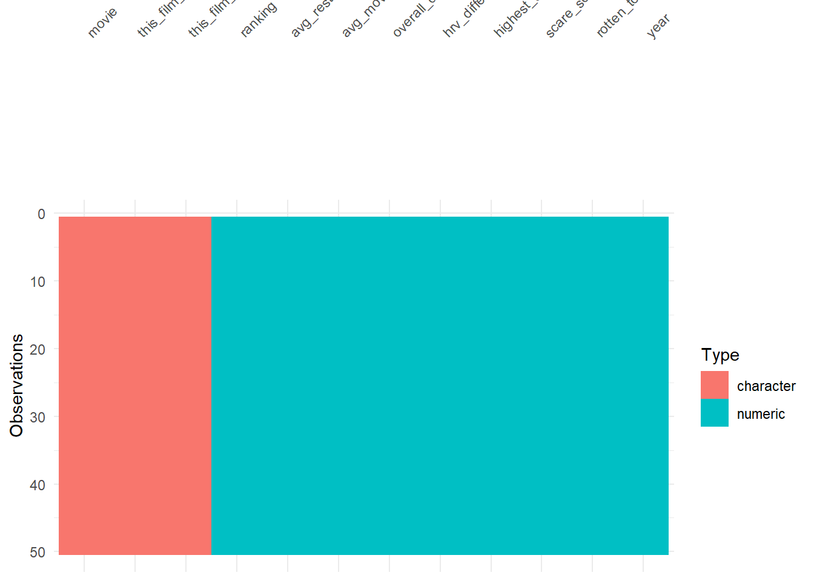
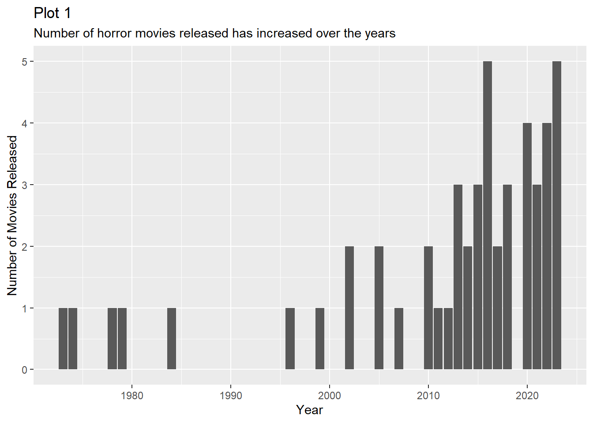
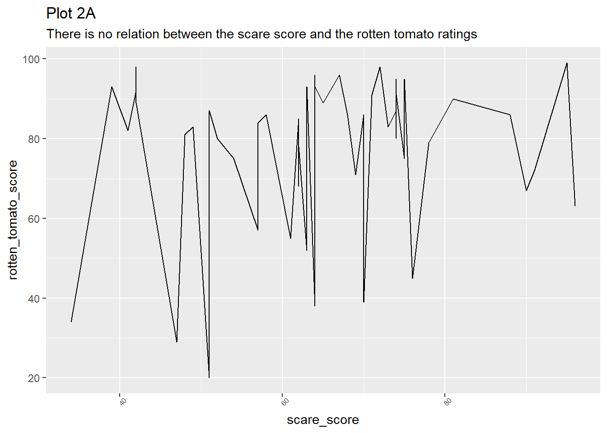
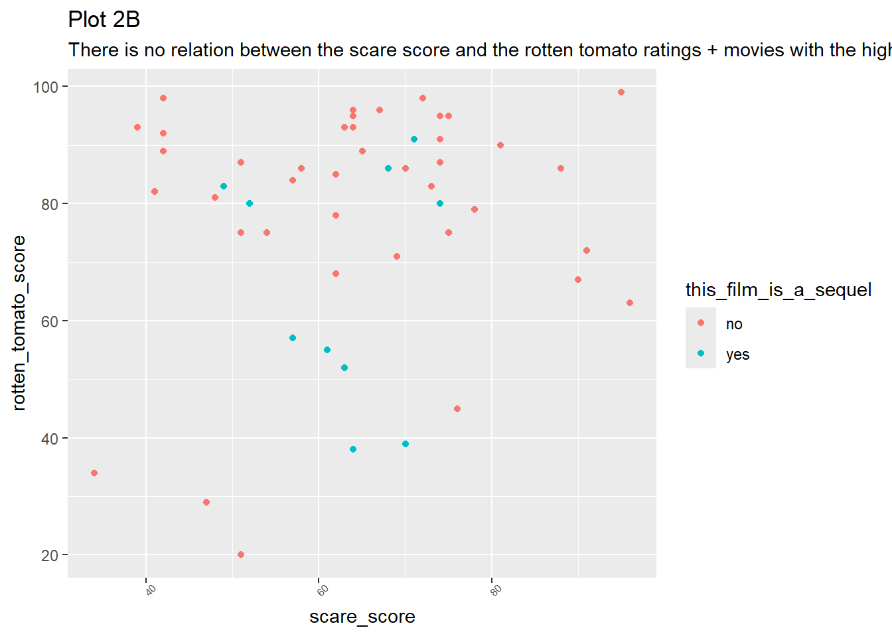
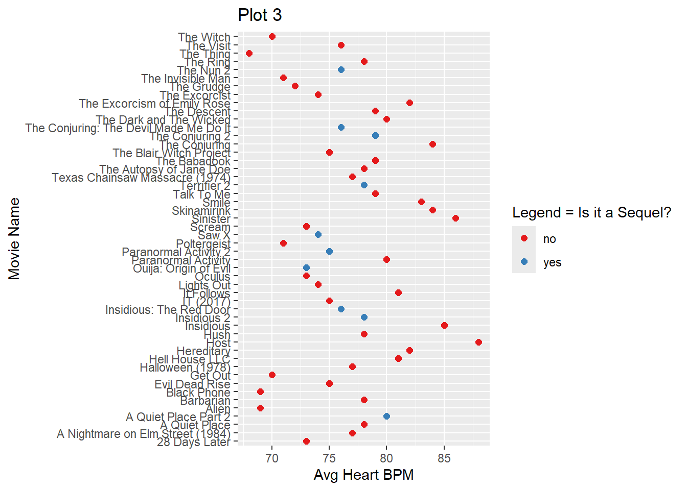
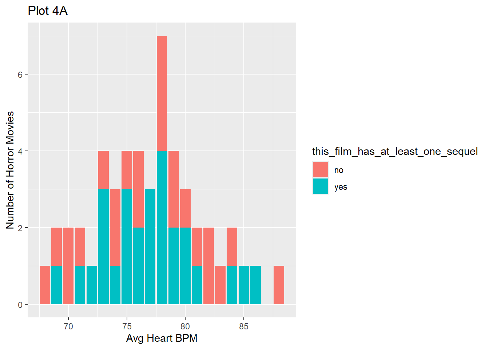
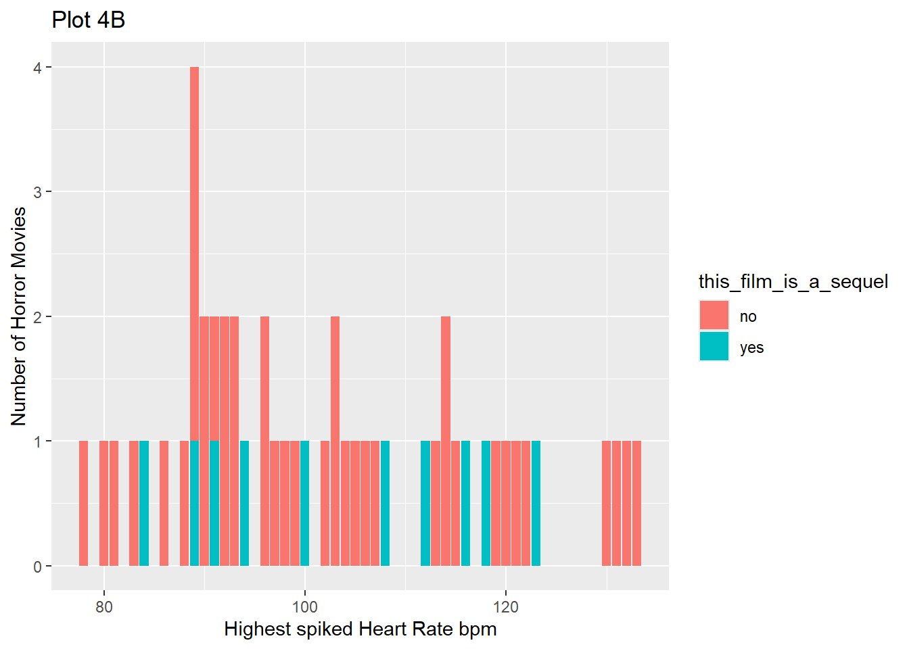

A continuous experiment where a certain number of horror movies were selected and random horror movie watchers’ heart rates from examined throughout the time they watched the movie.
What would make this dataset better?
If the experiment also documented factors like ages, genders, time frames of the films and so on.
Overall Summary
The Horror Movie data, which majorly explores quantitative data, is suprising in many ways. We have seen how higher/lower scare scores don’t really reflect through rotten tomato’s reviews and vice versa. How the different measured forms of heart rates can act as dependant variables, how scare scores are significantly higher for movies without sequels. We also went onto explore what might be the scariest movie alive! Interesting huh, go on read more…
Set Up
#Setuplibrary(tidyverse)
── Attaching core tidyverse packages ──────────────────────── tidyverse 2.0.0 ──
✔ dplyr 1.1.4 ✔ readr 2.1.5
✔ forcats 1.0.0 ✔ stringr 1.5.2
✔ ggplot2 4.0.0 ✔ tibble 3.3.0
✔ lubridate 1.9.4 ✔ tidyr 1.3.1
✔ purrr 1.1.0
── Conflicts ────────────────────────────────────────── tidyverse_conflicts() ──
✖ dplyr::filter() masks stats::filter()
✖ dplyr::lag() masks stats::lag()
ℹ Use the conflicted package (<http://conflicted.r-lib.org/>) to force all conflicts to become errors
library(mosaic) # Our all-in-one package
Registered S3 method overwritten by 'mosaic':
method from
fortify.SpatialPolygonsDataFrame ggplot2
The 'mosaic' package masks several functions from core packages in order to add
additional features. The original behavior of these functions should not be affected by this.
Attaching package: 'mosaic'
The following object is masked from 'package:Matrix':
mean
The following objects are masked from 'package:dplyr':
count, do, tally
The following object is masked from 'package:purrr':
cross
The following object is masked from 'package:ggplot2':
stat
The following objects are masked from 'package:stats':
binom.test, cor, cor.test, cov, fivenum, IQR, median, prop.test,
quantile, sd, t.test, var
The following objects are masked from 'package:base':
max, mean, min, prod, range, sample, sum
library(skimr) # Looking at data
Attaching package: 'skimr'
The following object is masked from 'package:mosaic':
n_missing
library(visdat) # Mapping missing datalibrary(naniar) # Missing data visualization and munging
Attaching package: 'naniar'
The following object is masked from 'package:skimr':
n_complete
library(janitor) # Clean the data
Attaching package: 'janitor'
The following objects are masked from 'package:stats':
chisq.test, fisher.test
library(tinytable) # Printing Tables for our data
Attaching package: 'tinytable'
The following object is masked from 'package:ggplot2':
theme_void
Attaching package: 'corrgram'
The following object is masked from 'package:lattice':
panel.fill
Read Data & Examine Data
#Reading & Inspecting Horror Movies Datasethorrormovies <- readr::read_csv("../data/HorrorMoviedata.csv")
Rows: 50 Columns: 12
── Column specification ────────────────────────────────────────────────────────
Delimiter: ","
chr (3): Movie, This film is a sequel., This film has at least one sequel
dbl (9): Ranking, Avg resting heart rate (BPM), Avg movie heart rate (BPM), ...
ℹ Use `spec()` to retrieve the full column specification for this data.
ℹ Specify the column types or set `show_col_types = FALSE` to quiet this message.
Rows: 50 Columns: 12
── Column specification ────────────────────────────────────────────────────────
Delimiter: ","
chr (3): Movie, This film is a sequel., This film has at least one sequel
dbl (9): Ranking, Avg resting heart rate (BPM), Avg movie heart rate (BPM), ...
ℹ Use `spec()` to retrieve the full column specification for this data.
ℹ Specify the column types or set `show_col_types = FALSE` to quiet this message.
base::names(horrormovies)
[1] "Ranking" "Movie"
[3] "Avg resting heart rate (BPM)" "Avg movie heart rate (BPM)"
[5] "Overall difference (BPM)" "HRV Difference (%)"
[7] "Highest spike (BPM)" "Scare Score"
[9] "This film is a sequel." "This film has at least one sequel"
[11] "Rotten Tomato score" "Year"
# A tibble: 50 × 12
ranking movie avg_resting_heart_ra…¹ avg_movie_heart_rate…²
<dbl> <chr> <dbl> <dbl>
1 1 Sinister 64 86
2 2 Host 64 88
3 3 Skinamirink 64 84
4 4 Insidious 64 85
5 5 The Conjuring 64 84
6 6 Hereditary 64 82
7 7 Smile 64 83
8 8 The Excorcism of Emily… 64 82
9 9 Hell House LLC 64 81
10 10 Talk To Me 64 79
# ℹ 40 more rows
# ℹ abbreviated names: ¹avg_resting_heart_rate_bpm, ²avg_movie_heart_rate_bpm
# ℹ 8 more variables: overall_difference_bpm <dbl>,
# hrv_difference_percent <dbl>, highest_spike_bpm <dbl>, scare_score <dbl>,
# this_film_is_a_sequel <chr>, this_film_has_at_least_one_sequel <chr>,
# rotten_tomato_score <dbl>, year <dbl>
Visualize for Missing Data (No missing data found)
visdat::vis_dat(horrormovies_modified)

Data Munging
horrormovies_modified2 <- horrormovies_modified %>%mutate(this_film_is_a_sequel =as.factor(this_film_is_a_sequel),this_film_has_at_least_one_sequel =as.factor(this_film_has_at_least_one_sequel), ) %>%##rename("dish" = item) %>% # rename item to dish# arrange the Qual variables first, Quant next dplyr::relocate(where(is.factor), .after = ranking)horrormovies_modified2
# A tibble: 50 × 12
ranking this_film_is_a_sequel this_film_has_at_least_one_sequel movie
<dbl> <fct> <fct> <chr>
1 1 no yes Sinister
2 2 no no Host
3 3 no no Skinamirink
4 4 no yes Insidious
5 5 no yes The Conjuring
6 6 no no Hereditary
7 7 no no Smile
8 8 no no The Excorcis…
9 9 no yes Hell House L…
10 10 no no Talk To Me
# ℹ 40 more rows
# ℹ 8 more variables: avg_resting_heart_rate_bpm <dbl>,
# avg_movie_heart_rate_bpm <dbl>, overall_difference_bpm <dbl>,
# hrv_difference_percent <dbl>, highest_spike_bpm <dbl>, scare_score <dbl>,
# rotten_tomato_score <dbl>, year <dbl>
Data Dictionary
Variable
Class
Description
Ranking
double
The overall ranking given to that movie amongst all the movies in the list
This film is a sequel
factor
Specifies whether this film is a sequel or not
This film has atleast 1 sequel
factor
Specifies whether this film has atleast 1 sequel
Movie
character
Movie name
Avg Resting bpm
double
Average resting bpm of movie watchers recorded before the start of the movie
Avg Movie bpm
double
Average bpm of movie watchers while watching the movie
Overall Difference
double
Difference seen between Avg resting bpm and Avg movie bpm
HRV Difference %
double
The fluctuation in the time interval between heartbeats as a percentage
Highest Spiked bpm
double
Highest bpm of movie watchers recorded during the movie
Scare Score
double
How scary was the movie, given by movie watchers
Rotten Tomato Score
double
Published rating score given by Rotten Tomatoes
Year
double
Year of Movie release
Tiny Table
horrormovies_modified2 %>%head(10) %>% tinytable::tt(caption ="Horror Movie Data (Clean)") %>% tinytable::theme_html(class ="table table-hover table-striped table-condensed") %>%style_tt(fontsize =0.8) %>% stats::setNames(c("Rankings", "This Film is a Sequel", "Atleast 1 Sequel", "Movie", "Avg Resting BPM", "Avg Movie BPM", "Overall Diff", "HRV Diff%", "Highest Spiked BPM", "Scare Score", "Rotten Tomato Score", "Year"))
Horror Movie Data (Clean)
Rankings
This Film is a Sequel
Atleast 1 Sequel
Movie
Avg Resting BPM
Avg Movie BPM
Overall Diff
HRV Diff%
Highest Spiked BPM
Scare Score
Rotten Tomato Score
Year
1
no
yes
Sinister
64
86
22
21
131
96
63
2012
2
no
no
Host
64
88
24
18
130
95
99
2020
3
no
no
Skinamirink
64
84
20
22
113
91
72
2022
4
no
yes
Insidious
64
85
21
18
133
90
67
2010
5
no
yes
The Conjuring
64
84
20
18
132
88
86
2013
6
no
no
Hereditary
64
82
18
19
104
81
90
2018
7
no
no
Smile
64
83
19
15
114
78
79
2022
8
no
no
The Excorcism of Emily Rose
64
82
18
17
96
76
45
2005
9
no
yes
Hell House LLC
64
81
17
16
107
75
75
2015
10
no
no
Talk To Me
64
79
18
15
106
75
95
2023
Summaries
This film is a sequel >> This film has atleast 1 sequel ratios
PLOT 1Number of Horror Movies released over the years
horrormovies_modified2 %>%gf_bar(~year) %>%gf_labs(title ="Plot 1",subtitle ="Number of horror movies released has increased over the years",x ="Year", y ="Number of Movies Released" )

gf_refine(scale_fill_brewer(palette ="Set1"))
<ggproto object: Class ScaleDiscrete, Scale, gg>
aesthetics: fill
axis_order: function
break_info: function
break_positions: function
breaks: waiver
call: call
clone: function
dimension: function
drop: TRUE
expand: waiver
get_breaks: function
get_breaks_minor: function
get_labels: function
get_limits: function
get_transformation: function
guide: legend
is_discrete: function
is_empty: function
labels: waiver
limits: NULL
make_sec_title: function
make_title: function
map: function
map_df: function
minor_breaks: waiver
n.breaks.cache: NULL
na.translate: TRUE
na.value: NA
name: waiver
palette: function
palette.cache: NULL
position: left
range: environment
rescale: function
reset: function
train: function
train_df: function
transform: function
transform_df: function
super: <ggproto object: Class ScaleDiscrete, Scale, gg>
What did I find Suprising?
Not much is suprising here, it’s natural to see a higher number of horror movies being released over the years as people gain access to newer technologies, however it is interesting to see gaps within this graph especially between 1985 and 1995 when not a single Horror movie had been released, an entire Decade with no movie! What traumatized people back then to not make a single horror movie for an entire decade I wonder?
PLOT 2AHypothesis: Do higher scare scores mean higher rotten tomato scores?
horrormovies_modified2 %>%gf_line(rotten_tomato_score ~ scare_score) %>%gf_labs(title ="Plot 2A", subtitle ="There is no relation between the scare score and the rotten tomato ratings" ) %>%gf_theme(theme(axis.text.x =element_text(size =6,angle =45, hjust =0.5 ))) %>%gf_refine(scale_fill_brewer(palette ="Set1"))

PLOT 2BHypothesis: Do higher scare scores mean higher rotten tomato scores?
horrormovies_modified2 %>% tidyr::drop_na() %>%gf_point(rotten_tomato_score ~ scare_score,colour =~this_film_is_a_sequel, ) %>%gf_labs(title ="Plot 2B", subtitle ="There is no relation between the scare score and the rotten tomato ratings + movies with the highest rotten tomato score were not sequals" ) %>%gf_theme(theme(axis.text.x =element_text(size =6,angle =45, hjust =0.5 ))) %>%gf_refine(scale_fill_brewer(palette ="Set1"))

What did I find Suprising?
It’s interesting to find that the Scare scores do not corelate with the Rotten Tomato Scores thus proving the hypothesis wrong!
PLOT 3Distribution of Avg Movie heart rate bpm across film types
#Ask Arvind about gf_themehorrormovies_modified2 %>%gf_point(movie~avg_movie_heart_rate_bpm,colour =~this_film_is_a_sequel,##shape = ~this_film_has_at_least_one_sequel,size =2, data = . ) %>%gf_labs(title ="Plot 3",x ="Avg Heart BPM",y ="Movie Name" ) %>%# Use same name for scales to merge legendsgf_refine(scale_color_brewer(name ="Legend = Is it a Sequel?",palette ="Set1" ),scale_shape_manual(name ="Legend = It has a Sequel?",values =c(15:21) ) )

What did I find Suprising?
Stand alone horror films have either higher or lower avg heart rate bpm while the movies which are sequels’ avg movie heart rate bpm fall into one section. This could be because movie watchers who have watched the orginal know what to expect from the franchaise.
PLOT 4What is the best Horror Movie based on Highest Heart bpm, Rotten Tomato Score, and Scare Score?
Understanding which films have the highest Rotten Tomato Scores
“It Follows” shall be the horror Movie that I shall never watch, however it’s suprising to see that despite it’s scare score and high rotten tomato review, it didn’t generate the highest spiked heart rate during the duration of the film. So Is it really the scariest?
Experimental Graphs
horrormovies_modified2 %>%gf_bar(~avg_movie_heart_rate_bpm,fill =~this_film_has_at_least_one_sequel,position ="stack" ) %>%gf_labs(title ="Plot 4A",x ="Avg Heart BPM",y ="Number of Horror Movies" ) %>%# Use same name for scales to merge legendsgf_refine(scale_color_brewer(name ="This Film has atleast 1 sequel",palette ="Set1" ) )

horrormovies_modified2 %>%gf_bar(~highest_spike_bpm,fill =~this_film_is_a_sequel,position ="stack" ) %>%gf_labs(title ="Plot 4B",x ="Highest spiked Heart Rate bpm",y ="Number of Horror Movies" ) %>%# Use same name for scales to merge legendsgf_refine(scale_color_brewer(name ="This Film has atleast 1 sequel",palette ="Set1" ) )

##Scare Scores are significantly higher for films without sequels than those with sequelshorrormovies_modified2 %>%gf_histogram(scare_score~movie,fill =~this_film_has_at_least_one_sequel,bins =20, orientation ="y" ) %>%gf_labs(title ="Plot 5",x ="Highest spiked Heart Rate bpm",y ="Number of Horror Movies" ) %>%# Use same name for scales to merge legendsgf_refine(scale_color_brewer(name ="This Film has atleast 1 sequel",palette ="Set1" ) )